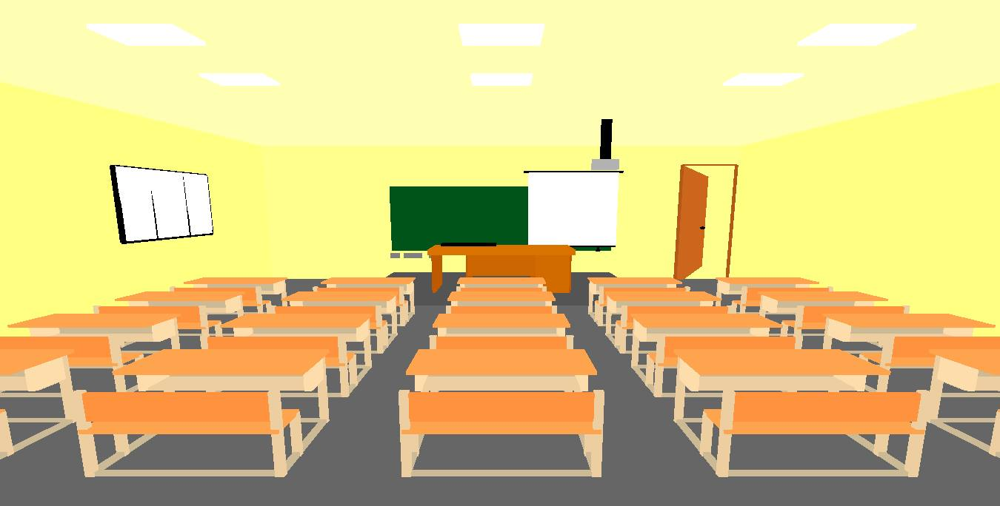
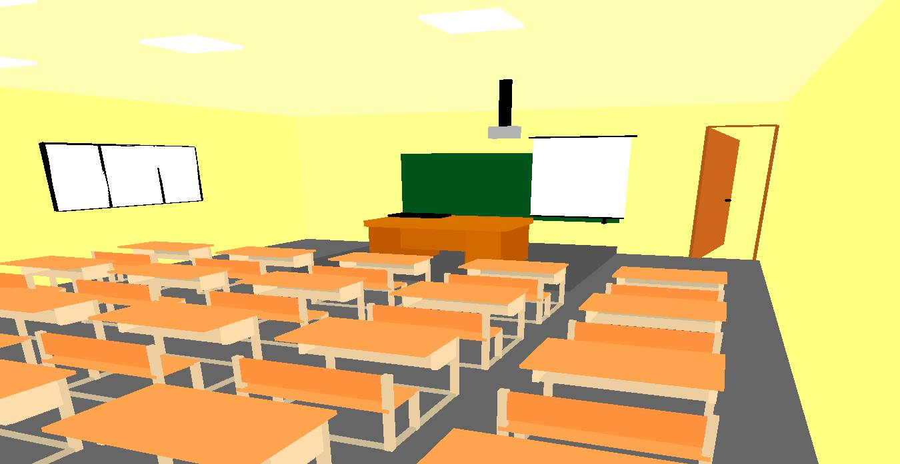
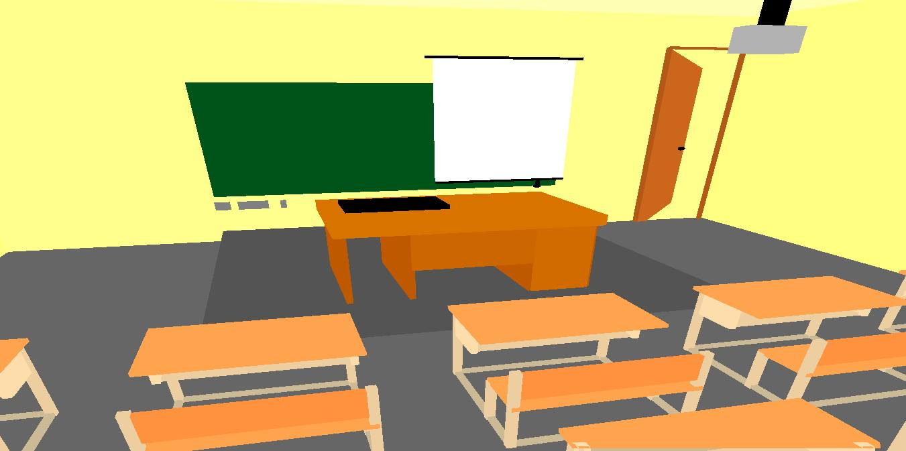
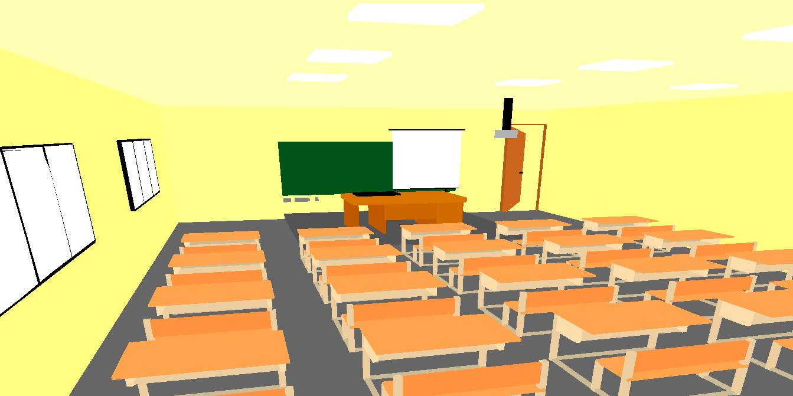
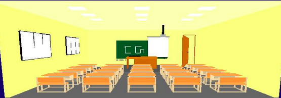

Computer Graphics
Assignment - 2
R Vidya (2014AAPS212H), Soamya Agrawal (2014A7PS185H), GVS Ravi Teja (2014A7PS196H)
Table of Contents
-
Introduction
-
Predefined GLUT Functions Used
-
How to use
-
Implementation
-
Results
This assignment implements graphical visualization using a three dimensional scene, in this case, a classroom. The program uses the openGL library and a heavy usage of the matrix stack feature. The process flow is divided into 4 steps:
1. Create Primitives such as walls, tables, chairs etc.
2. Position the primitives in the world co-ordinate space.
3. Setup the camera position, view volume and up direction.
4. Capture the elements in the view volume and scale.
The scene contains:
20 Benches
9 Lights
4 Walls
2 Windows
1 Greenboard
1 Projector
1 Platform
1 Door
1 Floor
1 Projector Screen
1 Table
1 Keyboard
1. glutSolidCube()
2. glPushMatrix()
3. glPopMatrix()
4. glutSolidSphere()
5. glTranslatef()
6. glScalef()
7. glutRotatef()
8. glColor3f()
9. glVertex3d()
10. glBegin(GL_QUADS) and glEnd()
11. gluLookAt()
The key-bindings along with their application are as shown below:
-
Mouse Scroll used to walk forward and backward respectively.
-
Right arrow key to increase rotation by 5 degree in y direction.
-
Left arrow key to decrease rotation by 5 degree in y direction.
-
Up arrow key to increase rotation by 5 degree in x direction.
-
Down arrow key to decrease rotation by 5 degree in x direction.
-
z to zoom in
-
x to zoom out
-
a and d to pan horizontally.
-
s and w to pan vertically.
-
c to close the door.
-
o to open the door.
-
p to open projector screen.
-
q to close projector screen.
2. Implementation
We used the following primitive structures to construct the scene:
-
Benches:
Benches are made using draw_tablechair(). Benches are made in parts by making table's top , front , side and bottom and chair is made by making chair's seat and its side walls .All this are made by using predefined glutfunctions like glTranslatef(),glScalef(),glutSolidCube().
-
Lights: To draw all the 9 lights , draw_lights() function is used. Light is drawn by using predefined functions such as glTranslatef() to set the exact location of light on ceiling and glScalef() to set the size of light and basic glutSolidCube() on which all the changes are made . After drawing one light , the rest lights are drawn by using the same code , just changing the basic x and z positions.
-
Walls: All the four walls are aligned properly by using predefined functions like glTranslatef(),glScalef(),glutSolidCube() in draw_walls() function.
-
Windows: 2 windows are built using draw_windows() functions by using predefined functions like glTranslatef(),glSolidCube() and glScalef() .4 window boundaries are drawn and to give window's opening and closing effect, 2 more verical rods are made in between.
-
Greenboard: Greenboard is drawn using our function draw_blackboard() which uses predefined functions like glTranslatef() , glScalef() and glutSolidCube() and to color the greenboard green glColor3f() function is given proper rgb values.
-
Projector:
Projector is drawn using our defined function draw_projector(). This function builds rod of the projector by using predefined functions and base of the projector using predefined functions like glTranslatef() , glScalef() and glSolidCube() to achieve the location and shape.
-
Platform:
Platform is drawn using our defined function draw_draw_platform() which uses glTranslatef() function to set the exact location of the platform and glScalef() function to set it's size as in elevation of the platform and all this basic changes are made on the cube drawn using glutSolidCube() function.
-
Door:
Door is drawn using our defined function draw_door() which uses GL_QUADS. To give door the opening and closing look, the four coordinates of the door are set accordingly and to make the border of the door, basic predefined functions like glTranslatef() , glScalef() and glutSolidCube() functions are used and to draw the knob of the door ,glutSolidSphere() along with glTranslatef() functions are used.
-
Floor:
Floor is drawn using our defined function draw_floor(). This function uses predefined glut functions like glTranslatef(),glScalef()and glutSolidCube().
-
ProjectorScreen:
Projector Screen is drawn using our defined function draw_projector(). This function builds up the projector screen in parts by buildind white projector screen and rods attached to it along with hanger and a ring .All this functionalities are achieved by using predefined GLUT functions like glTranslatef(),glScalef(),glutSolidCube() and to make the ring glutSolidSphere() is used.
-
Table:
Table is drawn using our-defined draw_table() function. This function builds up the table in parts such as making of top of the table ,left leg ,right leg,partitions,side, front of the table and all this is achieved using predefined glut functions like glTranslatef(),glScalef(),glSolidCube(),glColor3f().
-
Keyboard:
Keyboard is drawn using our-defined draw_keyboard() function. The function uses predefined functions glColor3f() , glTranslatef() , glScalef() and glutSolidCube() to achieve black color of keyboard and it's position on the table.
1.Front View
2.Right Side View
3.Zoomed In View
4.Left Side View
5.CG View